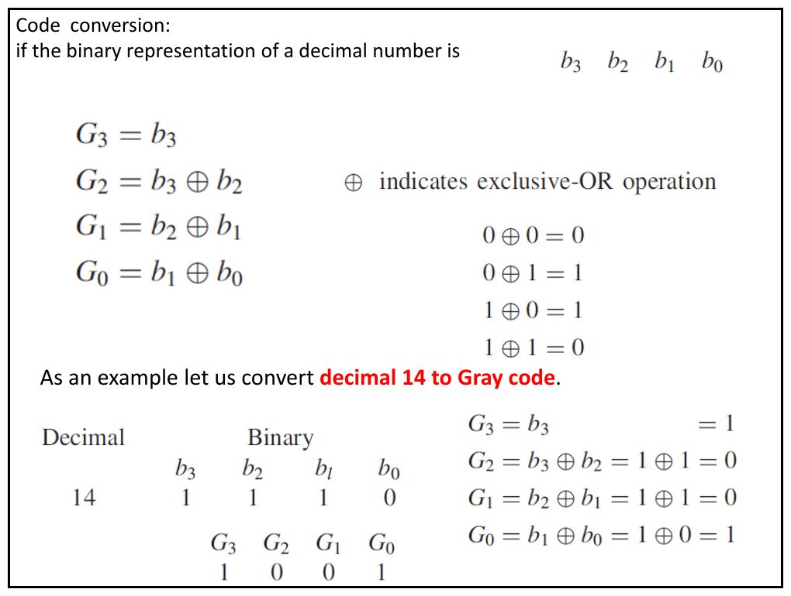
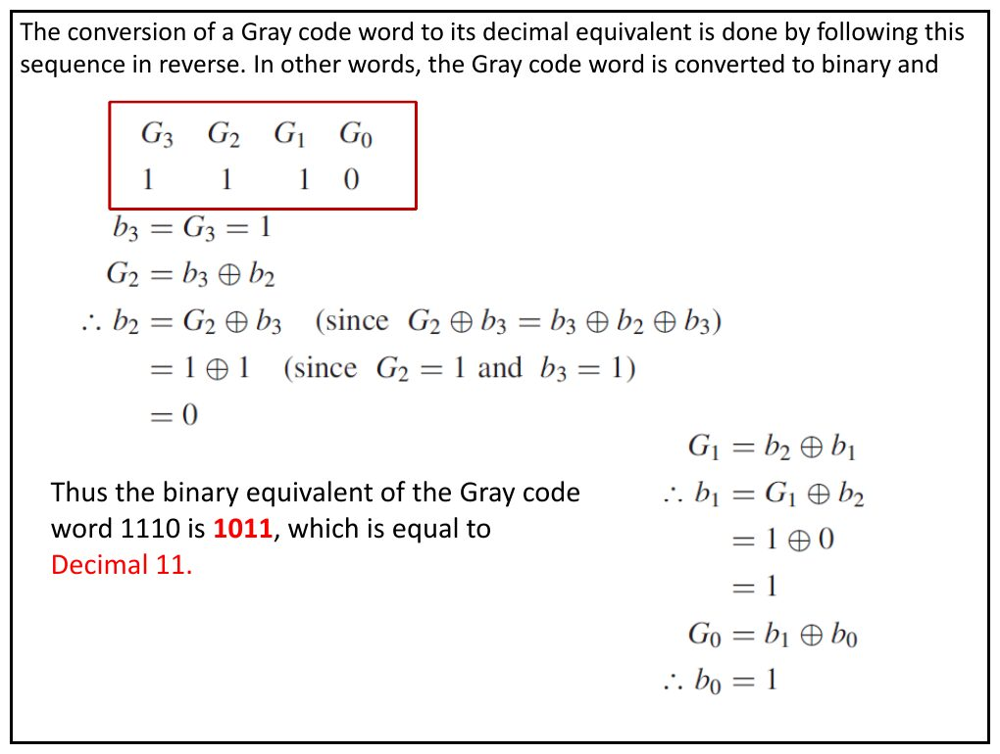

· EEM211
EEM211 Sayısal Mantık Tasarımı: BCD Kodları, Gray Kodu ve Boole Cebri Teoremleri
EEM211 – Sayısal Mantık Tasarımı · 05.10.2012 · 16.10.2026
Bu yazı, Başkent Üniversitesi EEM211 Sayısal Mantık Tasarımı dersinin 5 Ekim 2012 tarihli sunusudur (PDF'in yazar bilgisinde dersin hocası Hamit Erdem'in adı geçiyor). Dokuz slaytlık sunu iki konuyu kapsıyor: ikili kodlar ve Gray kodu, ardından Boole cebrinin temel teoremleri. Slaytlar İngilizce; tablolar ve formüller aşağıda metin olarak verildi. Sununun orijinal PDF'i yazının sonunda indirilebilir.
İkili kodlanmış ondalık (BCD) kodlar
Sununun ilk slaytı, bir ondalık basamağın dört bitle kodlanmasının farklı yollarını yan yana veriyor.
| Decimal digit | (BCD) 8421 | Excess-3 | 84-2-1 | 2421 |
|---|---|---|---|---|
| 0 | 0000 | 0011 | 0000 | 0000 |
| 1 | 0001 | 0100 | 0111 | 0001 |
| 2 | 0010 | 0101 | 0110 | 0010 |
| 3 | 0011 | 0110 | 0101 | 0011 |
| 4 | 0100 | 0111 | 0100 | 0100 |
| 5 | 0101 | 1000 | 1011 | 1011 |
| 6 | 0110 | 1001 | 1010 | 1100 |
| 7 | 0111 | 1010 | 1001 | 1101 |
| 8 | 1000 | 1011 | 1000 | 1110 |
| 9 | 1001 | 1100 | 1111 | 1111 |
Gray kodu
Gray kodunda ardışık iki sayı arasında yalnızca bir bit değişir. Sunudaki ilk tablo ("Three bit Gray code") 0–9 arası ondalık basamaklar için bir döngüsel (cyclic) kod veriyor; ikinci tablo dört bitlik Gray kodunu gösteriyor.
| Decimal | Cyclic |
|---|---|
| 0 | 0000 |
| 1 | 0001 |
| 2 | 0011 |
| 3 | 0010 |
| 4 | 0110 |
| 5 | 0100 |
| 6 | 1100 |
| 7 | 1110 |
| 8 | 1010 |
| 9 | 1000 |
Not: Slayt başlığı "Three bit Gray code" olsa da tablodaki kod sözcükleri dört bitliktir. Ayrıca bu tablo standart (yansıtılmış) Gray kodu değil, 0–9 basamakları için bir döngüsel koddur: komşu satırlar (9'dan 0'a dönüş dahil) tek bit farklıdır, ama örneğin 5'in standart Gray karşılığı 0111'dir.
| Decimal | Binary | Gray |
|---|---|---|
| 0 | 0000 | 0000 |
| 1 | 0001 | 0001 |
| 2 | 0010 | 0011 |
| 3 | 0011 | 0010 |
| 4 | 0100 | 0110 |
| 5 | 0101 | 0111 |
| 6 | 0110 | 0101 |
| 7 | 0111 | 0100 |
| 8 | 1000 | 1100 |
| 9 | 1001 | 1101 |
| 10 | 1010 | 1111 |
| 11 | 1011 | 1110 |
| 12 | 1100 | 1010 |
| 13 | 1101 | 1011 |
| 14 | 1110 | 1001 |
| 15 | 1111 | 1000 |
Except for the most significant bit position, all columns are "reflected" about the midpoint; in the most significant bit position, the top half is all 0's and the bottom half all 1's.
Yani en anlamlı bit dışında bütün sütunlar tablonun ortasına göre "yansıtılmıştır"; en anlamlı bit sütununda üst yarı tamamen 0, alt yarı tamamen 1'dir.
İkiliden Gray koduna dönüşüm
A decimal number can be converted to Gray code by first converting it to binary. The binary number is converted to the Gray code by performing a modulo-2 sum of each digit (starting with the least significant digit) with its adjacent digit.
Ondalık sayı önce ikiliye çevrilir; sonra her bit, en anlamsız bitten başlayarak komşusuyla modulo-2 toplanır (XOR). Sayının ikili gösterimi b3 b2 b1 b0 ise:
- G3 = b3
- G2 = b3 ⊕ b2
- G1 = b2 ⊕ b1
- G0 = b1 ⊕ b0
Burada ⊕ özel VEYA (exclusive-OR) işlemidir: 0 ⊕ 0 = 0, 0 ⊕ 1 = 1, 1 ⊕ 0 = 1, 1 ⊕ 1 = 0.
Örnek: ondalık 14'ü Gray koduna çevirmek. 14 = (1110)₂, yani b3 = 1, b2 = 1, b1 = 1, b0 = 0.
- G3 = b3 = 1
- G2 = b3 ⊕ b2 = 1 ⊕ 1 = 0
- G1 = b2 ⊕ b1 = 1 ⊕ 1 = 0
- G0 = b1 ⊕ b0 = 1 ⊕ 0 = 1
Sonuç: 14'ün Gray kodu 1001.

Gray kodundan ikiliye dönüşüm
The conversion of a Gray code word to its decimal equivalent is done by following this sequence in reverse. In other words, the Gray code word is converted to binary and …
Gray kodu önce ikiliye çevrilir. Bu kez her ikili bit, bir üstteki ikili bit ile o konumdaki Gray bitinin XOR'udur. Örnek: Gray kodu G3 G2 G1 G0 = 1110.
- b3 = G3 = 1
- G2 = b3 ⊕ b2 olduğundan b2 = G2 ⊕ b3 (çünkü G2 ⊕ b3 = b3 ⊕ b2 ⊕ b3) = 1 ⊕ 1 = 0
- G1 = b2 ⊕ b1 olduğundan b1 = G1 ⊕ b2 = 1 ⊕ 0 = 1
- G0 = b1 ⊕ b0 olduğundan b0 = G0 ⊕ b1 = 0 ⊕ 1 = 1
Sonuç: Gray kodu 1110'un ikili karşılığı 1011, yani ondalık 11.

Tek değişkenli teoremler
| Sabitlerle | Bir değişkenle |
|---|---|
| 0 · 0 = 0 | x · 0 = 0 |
| 1 + 1 = 1 | x + 1 = 1 |
| 1 · 1 = 1 | x · 1 = x |
| 0 + 0 = 0 | x + 0 = x |
| 0 · 1 = 1 · 0 = 0 | x · x = x |
| 1 + 0 = 0 + 1 = 1 | x + x = x |
| x = 0 ise x' = 1 | x · x' = 0 |
| x = 1 ise x' = 0 | x + x' = 1 |
| (x')' = x |
Değişme, birleşme, dağılma ve yutma
| Özellik | İfadeler |
|---|---|
| Commutative (değişme) | x · y = y · x; x + y = y + x |
| Associative (birleşme) | x · (y · z) = (x · y) · z; x + (y + z) = (x + y) + z |
| Distributive (dağılma) | x · (y + z) = x · y + x · z; x + y · z = (x + y) · (x + z) |
| Absorption (yutma) | x + x · y = x |
Boole cebri postülaları ve teoremleri (Tablo 2.2)
Her ifadenin yanında ikizi (dual) verilmiştir: ikiz, + ile · ve 0 ile 1 yer değiştirilerek elde edilir.
| Expression | Dual | |
|---|---|---|
| P2 | a + 0 = a | a · 1 = a |
| P3 | a + b = b + a | ab = ba |
| P4 | a + (b + c) = (a + b) + c | a(bc) = (ab)c |
| P5 | a + bc = (a + b)(a + c) | a(b + c) = ab + ac |
| P6 | a + a' = 1 | a · a' = 0 |
| T1 | a + a = a | a · a = a |
| T2 | a + 1 = 1 | a · 0 = 0 |
| T3 | (a')' = a | |
| T4 | a + ab = a | a(a + b) = a |
| T5 | a + a'b = a + b | a(a' + b) = ab |
| T6 | ab + ab' = a | (a + b)(a + b') = a |
| T7 | ab + ab'c = ab + ac | (a + b)(a + b' + c) = (a + b)(a + c) |
| T8 | (a + b)' = a'b' | (ab)' = a' + b' |
| T9 | ab + a'c + bc = ab + a'c | (a + b)(a' + c)(b + c) = (a + b)(a' + c) |
| T10 | f(x1, x2, …, xn) = x1 · f(1, x2, …, xn) + x1' · f(0, x2, …, xn) | f(x1, x2, …, xn) = [x1 + f(0, x2, …, xn)] · [x1' + f(1, x2, …, xn)] |
Birleştirme, De Morgan ve uzlaşma teoremleri
Combining (birleştirme):
- x · (x + y) = x
- x · y + x · y' = x
- (x + y) · (x + y') = x
De Morgan teoremi:
- (x · y)' = x' + y'
- (x + y)' = x' · y'
Consensus (uzlaşma):
- x + x' · y = x + y
- x · (x' + y) = x · y
- x · y + y · z + x' · z = x · y + x' · z
- (x + y) · (y + z) · (x' + z) = (x + y) · (x' + z)